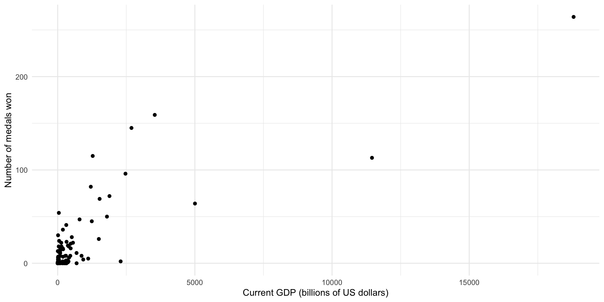
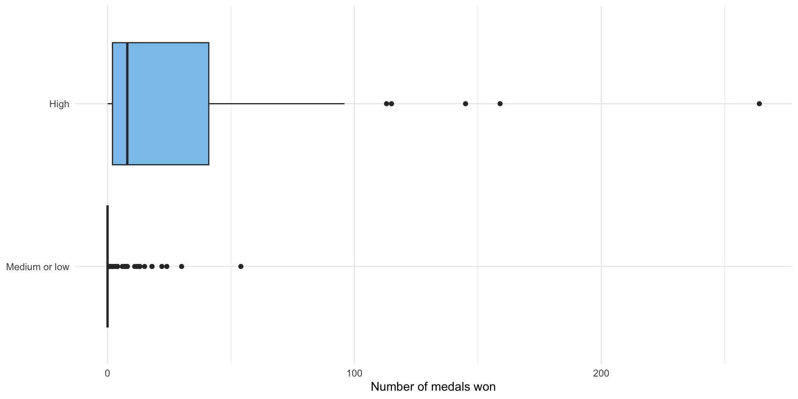
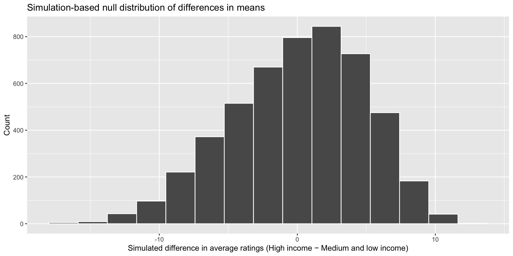
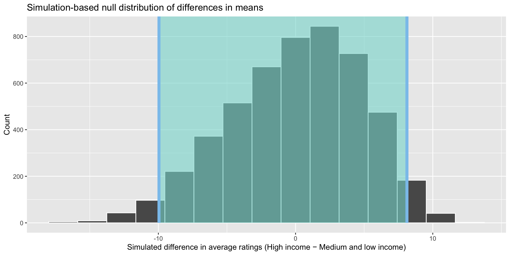
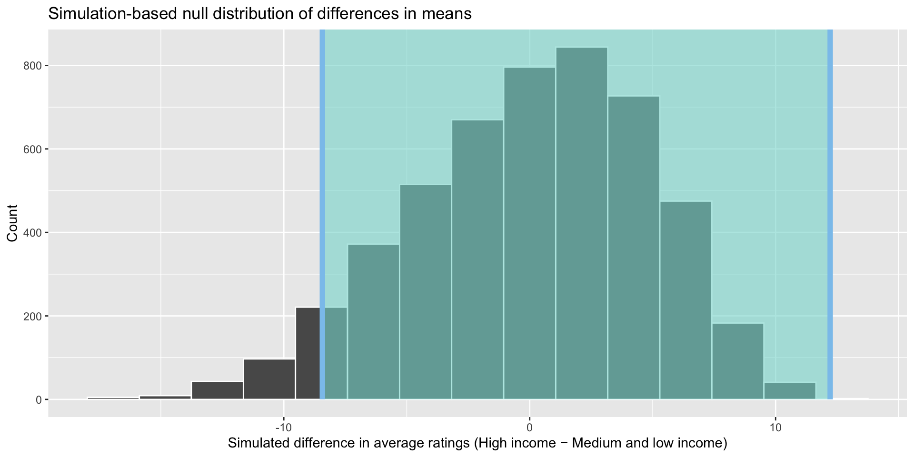

install.packages("infer")Hypothesis Testing II
Readings
Class
Pollock & Edwards, Chapter 7
Lab
Pollock & Edwards R Companion, Chapter 7
Section
Prerequisites
library(tidyverse)
library(skimr)
library(wbstats)
library(countrycode)
library(janitor)
library(broom)
library(infer)
library(scales)
set.seed(1234)Difference of means
Do richer countries win more medals in the summer Olympics than poorer countries, on average? To answer this question, we need the following data:
Number of medals countries have won in the summer Olympics,
Countries’ GDP for those corresponding years,
Some threshold by which we will determine whether a country has a high income or not.
Let’s collect those data. To start, we can get data on all athletes who have competed in the Olympics from 1896 to 2016.
olympics_df <- read_csv("https://raw.githubusercontent.com/cosmoduende/r-olympic-games/main/datasets/athleteEvents.csv")
olympics_df# A tibble: 271,116 × 15
ID Name Sex Age Height Weight Team NOC Games Year Season City
<dbl> <chr> <chr> <dbl> <dbl> <dbl> <chr> <chr> <chr> <dbl> <chr> <chr>
1 1 A Dijia… M 24 180 80 China CHN 1992… 1992 Summer Barc…
2 2 A Lamusi M 23 170 60 China CHN 2012… 2012 Summer Lond…
3 3 Gunnar … M 24 NA NA Denm… DEN 1920… 1920 Summer Antw…
4 4 Edgar L… M 34 NA NA Denm… DEN 1900… 1900 Summer Paris
5 5 Christi… F 21 185 82 Neth… NED 1988… 1988 Winter Calg…
6 5 Christi… F 21 185 82 Neth… NED 1988… 1988 Winter Calg…
7 5 Christi… F 25 185 82 Neth… NED 1992… 1992 Winter Albe…
8 5 Christi… F 25 185 82 Neth… NED 1992… 1992 Winter Albe…
9 5 Christi… F 27 185 82 Neth… NED 1994… 1994 Winter Lill…
10 5 Christi… F 27 185 82 Neth… NED 1994… 1994 Winter Lill…
# ℹ 271,106 more rows
# ℹ 3 more variables: Sport <chr>, Event <chr>, Medal <chr>Let’s clean that up a bit:
olympic_medals_df <- olympics_df |>
# Only look at the most recent year (2016)
slice_max(Year) |>
# Include more general country code
mutate(iso3c = countrycode(Team, "country.name", "iso3c")) |>
# Filter out individuals who didn't win a medal
drop_na(Medal) |>
# Count the number of medals won by each country (team) that year
count(iso3c, name = "medals_won")
olympic_medals_df# A tibble: 85 × 2
iso3c medals_won
<chr> <int>
1 ARE 1
2 ARG 22
3 ARM 4
4 AUS 82
5 AUT 2
6 AZE 18
7 BDI 1
8 BEL 21
9 BGR 7
10 BHR 2
# ℹ 75 more rowsWe now have a count of all medals won by each country that competed in the 2016 Summer Olympics. Let’s have a look at the shape of those data:
skim(olympic_medals_df)| Name | olympic_medals_df |
| Number of rows | 85 |
| Number of columns | 2 |
| _______________________ | |
| Column type frequency: | |
| character | 1 |
| numeric | 1 |
| ________________________ | |
| Group variables | None |
Variable type: character
| skim_variable | n_missing | complete_rate | min | max | empty | n_unique | whitespace |
|---|---|---|---|---|---|---|---|
| iso3c | 1 | 0.99 | 3 | 3 | 0 | 84 | 0 |
Variable type: numeric
| skim_variable | n_missing | complete_rate | mean | sd | p0 | p25 | p50 | p75 | p100 | hist |
|---|---|---|---|---|---|---|---|---|---|---|
| medals_won | 0 | 1 | 23.8 | 41.61 | 1 | 2 | 8 | 22 | 264 | ▇▁▁▁▁ |
85 countries competed in the 2016 Summer Olympics. On average, they won 23.8 medals. Every country won at least one medal. The US won the most medals, with an astonishing 264 medals. These data are heavily skewed to the right, with the majority of countries winning a small number of medals.
ggplot(olympic_medals_df, aes(x = medals_won)) +
geom_histogram() +
theme_minimal() +
labs(x = "Number of medals won",
y = "Count of countries")Now we need data on each country’s GDP that year:
gdp_df <- wb_data("NY.GDP.MKTP.CD", start_date = 2016, end_date = 2016, return_wide = F) |>
select(iso3c, gdp = value)
gdp_df# A tibble: 217 × 2
iso3c gdp
<chr> <dbl>
1 AFG 18116572395.
2 ALB 11861199831.
3 DZA 180763839522.
4 ASM 671000000
5 AND 2896610480.
6 AGO 52761617226.
7 ATG 1489692593.
8 ARG 557532320663.
9 ARM 10546136236.
10 ABW 2983635196.
# ℹ 207 more rowsLet’s take a look at that:
ggplot(gdp_df, aes(x = gdp / 1e9)) +
geom_histogram() +
scale_x_continuous(label = label_dollar()) +
labs(x = "Current GDP (billions of US dollars)",
y = "Count") +
theme_minimal()We need to define a threshold for national income beyond which we consider a country to be rich. Let’s use the 75th percentile:
gdp_75th <- skim(gdp_df, gdp) |>
pull(numeric.p75)
gdp_df <- gdp_df |>
mutate(income_level = if_else(gdp < gdp_75th, "Medium or low", "High"),
income_level = factor(income_level, ordered = T, levels = c("Medium or low", "High")))Let’s join these together to get our full data set:
medals_gdp_df <- olympic_medals_df |>
left_join(gdp_df, by = "iso3c") |>
drop_na(income_level)
medals_gdp_df# A tibble: 81 × 4
iso3c medals_won gdp income_level
<chr> <int> <dbl> <ord>
1 ARE 1 3.69e11 High
2 ARG 22 5.58e11 High
3 ARM 4 1.05e10 Medium or low
4 AUS 82 1.21e12 High
5 AUT 2 3.96e11 High
6 AZE 18 3.79e10 Medium or low
7 BDI 1 2.64e 9 Medium or low
8 BEL 21 4.76e11 High
9 BGR 7 5.40e10 Medium or low
10 BHR 2 3.23e10 Medium or low
# ℹ 71 more rowsDid high-income countries win more medals at the 2016 Summer Olympics than medium- or low-income countries?
ggplot(medals_gdp_df, aes(x = gdp / 1e9, y = medals_won)) +
geom_point() +
theme_minimal() +
labs(x = "Current GDP (billions of US dollars)",
y = "Number of medals won")
ggplot(medals_gdp_df, aes(x = medals_won, y = income_level, fill = income_level)) +
geom_boxplot() +
theme_minimal() +
theme(legend.position = "none") +
scale_fill_discrete(type = c("#D88C9A", "#8bc5ed"))
medals_avg <- medals_gdp_df |>
group_by(income_level) |>
summarise(n_countries = n(),
avg_medals = mean(medals_won)) |>
mutate(diff_means = avg_medals - lead(avg_medals))
medals_avg# A tibble: 2 × 4
income_level n_countries avg_medals diff_means
<ord> <int> <dbl> <dbl>
1 Medium or low 35 9.06 -27.6
2 High 46 36.7 NA It certainly looks like high-income countries won more medals on average rather than medium- and low-income countries. This difference looks pretty substantial, but we still need to confirm that it is not due to random error.
You have been introduced to a lot of different ways to answer this question. However, as Professor Allen Downey writes, there really is only one test:
Compute the test statistic that you are interested in testing,
Define the null hypothesis, which is a model of the world in which there is no effect,
Use that model of the null hypothesis to generate many simulated samples pulled from your null world,
For each simulated sample, compute the test statistic that you are interested in testing,
Work out the proportion of times those test statistics calculated in step 4 exceed the test statistic from your sample (calculated at step 1). If this proportion is very small, it is very unlikely that you would manage to get a sample that produced the test statistic you found in step 1 if, in fact, there was no effect.
This process is the broad foundation of all frequentist null hypothesis significance tests that you will come across. Let’s use it to answer our question about income and Olympic medal tallies.
Step 1: Compute the test statistic from your sample
We are interested in determining whether high-income countries won more models on average than medium- and low-income countries. Therefore, we are interested in the difference in the average number of medals won by high-income countries and medium- and low-income countries.
Happily, we worked this out above:
diff_means <- medals_avg |>
drop_na(diff_means) |>
pull(diff_means)
diff_means[1] -27.63851On average, high-income countries won 27.6 more medals than medium- and low-income countries.
Step 2: Define the null hypothesis
Our null hypothesis is that countries with these two different income levels won the same number of medals, on average. More succinctly: there is no difference of means. There are a couple of ways that we can build a model that captures this null effect (pulled from another great post from Professor Allen Downey):
Parametric: Merge the groups. Work out the shape of the pooled data: the center and spread. Then generate random samples from that distribution. This will give you a modeled world in which there is no difference between these two groups.
Resampling: Similar to the parametric approach, merge the groups. Draw samples (with replacement) from this merged group.
Permutation: Assign elements in the sample your different categories of interest at random. This is similar to resampling without replacement.
We are going to use permutation to generate our data sets of worlds in which there is no difference in the average number of medals won by high-income countries and by medium- and low-income countries.
Note
The broad point to take from this is that there are many different ways to create and think about the null hypothesis. Many of the tests you will use to determine statistical significance bury the decision they make about how to model the null hypothesis. It can be useful to bring that decision to the surface. This will allow you to control what is going on. Simulation-based hypothesis testing requires that you do this explicitly. More traditional tests, including the t-test, are doing this in the background.
Step 3: Generate many simulated data sets from the null hypothesis model
We are now going to draw 5,000 different random samples from our modeled null world. We are going to use various functions from the fantastic infer package to do this.
income_null <- medals_gdp_df |>
# Set up our DV and IV
specify(medals_won ~ income_level) |>
# Define our null hypothesis
hypothesize(null = "independence") |>
# Generate 5000 simulated samples from that null world using permutation
generate(reps = 5000, type = "permute")
income_nullResponse: medals_won (numeric)
Explanatory: income_level (factor)
Null Hypothesis: independence
# A tibble: 405,000 × 3
# Groups: replicate [5,000]
medals_won income_level replicate
<dbl> <fct> <int>
1 8 High 1
2 2 High 1
3 41 Medium or low 1
4 7 High 1
5 2 High 1
6 4 Medium or low 1
7 113 Medium or low 1
8 82 High 1
9 4 Medium or low 1
10 69 Medium or low 1
# ℹ 404,990 more rows
Note
We specify our preferred method for modelling the null world (permutation) using the type = "permute" argument in the generate() function.
Let’s take a look at some of those samples:
random_5 <- sample(1:5000, 5)
income_null |>
# Select five samples at random
filter(replicate %in% random_5) |>
# Plot the distribution of the # of medals won by these simulated countries
ggplot(aes(x = medals_won, y = factor(replicate), fill = income_level)) +
geom_boxplot() +
theme_minimal() +
labs(x = "Number of medals won",
y = "Random sample #",
fill = "Income level") +
scale_fill_discrete(type = c("#D88C9A", "#8bc5ed"))These are 5 randomly drawn samples from our null hypothesis world. Cool! You can see that the difference between the number of medals won by high- and low- and middle-income countries is generally small (there is a lot of overlap between the two boxplots drawn for each world). We can compare these distributions to those we observe in the actual number of medals countries won in the 2016 Olympics (from above):
ggplot(medals_gdp_df, aes(x = medals_won, y = income_level, fill = income_level)) +
geom_boxplot() +
theme_minimal() +
theme(legend.position = "none") +
scale_fill_discrete(type = c("#D88C9A", "#8bc5ed"))Our observed data have a much more pronounced difference. However, you can also see that there are some differences in our samples from our null world. The only thing driving those differences is random chance. This is why we need to run these tests. Just like our coin flips or our random samples of US voters discussed in the previous week, random chance can create real differences between our groups. Even if national income has no effect on the number of medals your country is likely to win, there will still be years in which high-income countries win more medals than low- and medium-income countries and other years in which the inverse is the case.
Step 4: Compute the test statistic for each of these null worlds
Remember, we are interested in the difference in the average number of medals won by high-income countries and medium- and low-income countries. In our sample, we found a difference of 27.6 medals.
We now need to calculate that difference for each of our samples from our simulated null world. In this world, we would expect there to be no difference, but because of random sampling error we are likely to occasionally see some years in which high-income countries win some more medals than medium- and low-income countries, and some years where the inverse is the case. As you can see from the graph below, our simulated null world reflects this: in most of our random samples of the null world, there is no difference in average medal counts. Other samples have some differences, and very few have large differences.
We can calculate this difference using infer::calculate():
income_diffs_null <- income_null |>
calculate("diff in means", order = c("Medium or low", "High"))visualize(income_diffs_null) +
labs(x = "Simulated difference in average ratings (High income − Medium and low income)", y = "Count",
title = "Simulation-based null distribution of differences in means")
We now have 5,000 simulated differences in the average number of medals won by high-income countries and medium- and low-income countries for our 5,000 samples from our simulated null world. The only thing creating these differences is random noise.
Step 5: Work out whether our sample could plausibly exist in this null world
We now have a good idea of the distribution of medals between high-income countries and medium- and low-income countries in a null world in which there was no difference between these groups other than that created by random chance.
How likely would we be to see our sample difference of means of 27.6 medals in this null world? Well, first let’s grab our commonly used 95% confidence interval:
boostrapped_confint <- get_confidence_interval(income_diffs_null)
boostrapped_confint# A tibble: 1 × 2
lower_ci upper_ci
<dbl> <dbl>
1 -17.0 18.6visualize(income_diffs_null) +
shade_confidence_interval(boostrapped_confint, color = "#8bc5ed", fill = "#85d9d2") +
labs(x = "Simulated difference in average ratings (High income − Medium and low income)", y = "Count",
title = "Simulation-based null distribution of differences in means")
These boundaries capture 95% of the differences between the number of medals won by high- and medium- and low-income countries in our random samples from our null world. Only 5% of the differences found in our 5,000 samples sit outside that shaded area. This equates to 250 statistics: 125 sitting below -16.97 medals and 125 sitting above 18.65. In other words, in only 2.5% of our samples, medium- and low-income countries won 16.97 or more medals more than high-income countries and in only 2.5% of our samples, high-income countries won 18.65 or more medals more than medium- and low-income countries.
How did we get that confidence interval? These are the 2.5th percentile and 97.5th percentile of the simulated statistics:
quantile(income_diffs_null$stat, probs = c(0.025, 0.975)) 2.5% 97.5%
-16.97267 18.64720 This makes sense! We want to work out the boundary within which 95% of our data fall. So, we just find that directly. I am treating this as a two tailed interval, so we need to account for the remaining 5% of data on both sides of the distribution so we look at the 2.5% and 97.5% boundaries.
If I wanted to apply a directional interval, I would just find the boundary beyond which 5% of the data fall according to my hypothesis:
quantile(income_diffs_null$stat, probs = 0.05) 5%
-14.75901 visualize(income_diffs_null) +
shade_confidence_interval(quantile(income_diffs_null$stat, probs = c(0.05, 1)), color = "#8bc5ed", fill = "#85d9d2") +
labs(x = "Simulated difference in average ratings (High income − Medium and low income)", y = "Count",
title = "Simulation-based null distribution of differences in means")
Our hypothesis is directional: we think that richer countries win more medals than poorer countries. If I observe in my sample that medium- and low-income countries have a much higher number of medals on average, I will need to reject my hypothesis that high-income countries win more medals on average. So the band of observed differences that would cause me to reject my hypothesis moves up.
Note
Because we are working with actual data points, we don’t have to worry about finding a theoretically-derived confidence interval. We just need to find the boundaries within which 95% of those actual data fall. It’s always a good thing when you don’t have to learn a new formula!
How plausible that, given all of this, we would be able to draw a sample from this null world that would have a difference of means of -27.6 medals?
visualize(income_diffs_null) +
shade_confidence_interval(boostrapped_confint, color = "#8bc5ed", fill = "#85d9d2") +
geom_vline(xintercept = diff_means, size = 1, color = "#77002c") +
labs(x = "Simulated difference in average ratings (High income − Medium and low income)", y = "Count",
title = "Simulation-based null distribution of differences in means",
subtitle = "Red line shows observed difference")It is highly unlikely that we would be able to draw a sample from our population and find a difference of 27.6 medals if there were, in fact, no differences between the average number of medals won by high-income countries and medium- and low-income countries. The graph above illustrates this well. Therefore, we can confidently state that we reject the null hypothesis of no difference. How confidently? To answer this we need to ask one more question of our data.
Our hypothesis is directional: we think that richer countries win more medals than medium- and low-income countries on average. Therefore, we can use a one-tailed test.
Tip
The infer::get_p_value() function uses more human- (as opposed to statistician!) friendly language. You can use words like "less" or "greater" instead of one-, left-, or right-tailed.
income_diffs_null |>
get_p_value(obs_stat = diff_means, direction = "less") |>
mutate(p_value_clean = pvalue(p_value))# A tibble: 1 × 2
p_value p_value_clean
<dbl> <chr>
1 0.0002 <0.001 This function uses the randomization-based null distribution to calculate the proportion of those simulated statistics that were less than our observed statistic of 27.6 medals. It found none.
We can reject that null hypothesis with a very high level of confidence. If there were really no relationship between income levels and medal tallies, the probability that we would see a statistic as or more extreme than 27.6 medals is less than 0.001.
Two sample t-tests
Above, we calculated the p-value for our difference of means test by looking at the proportion of the simulated statistics that were more extreme than our observed statistic. A different (more theoretically driven) approach is a t-test.
The t-test asks whether the difference of means between two groups represents a true difference or merely a random difference. It produces two values as its output: the t-score and the degrees of freedom.
The t-score is the ratio of the difference between the two means and the variation that exists within the samples of the two groups. Higher values of the t-score indicate that a large difference exists between the two sampled groups. Formally:
\[ t = \frac{(\bar{x_1} - \bar{x_2})}{\sqrt(\frac{s^2_1}{n_1} + \frac{s^2_2}{n_2})} \]
Where \(\bar{x_i}\) is the statistic (for example, mean) calculated from group \(i\), \(s_i\) is the standard deviation of group \(i\), and \(n_i\) is the size of group \(i\).
We can easily perform the t-test in R:
t_test_medals <- t.test(medals_won ~ income_level, data = medals_gdp_df)
t_test_medals
Welch Two Sample t-test
data: medals_won by income_level
t = -3.4656, df = 50.007, p-value = 0.001095
alternative hypothesis: true difference in means between group Medium or low and group High is not equal to 0
95 percent confidence interval:
-43.65682 -11.62020
sample estimates:
mean in group Medium or low mean in group High
9.057143 36.695652 This t-test provides the same answer as our simulation-based test: we are very, very unlikely to be able to pull out a sample from our population that had such a large difference of means if there was, in fact, no difference between these two groups. The p-value from this test - 0.0010953 - is very, very small.